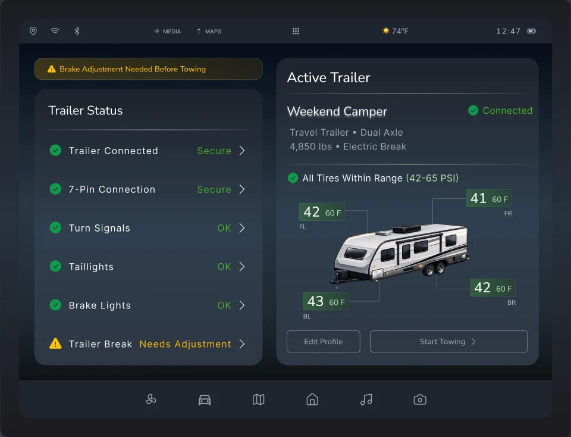

Step inside the cockpit.
A context-aware truck interface concept, designed with Ashita Nichanametla. Keep scrolling into the cab: the cluster and center display follow the guided towing flow.
5 driving contextsCluster + center displayPresented to GM design leadership
Open case study ↗
Stylized 3D model for illustration only. Screens are the original Figma concept. Detection and assistance are proposed behavior, not deployed capability.
